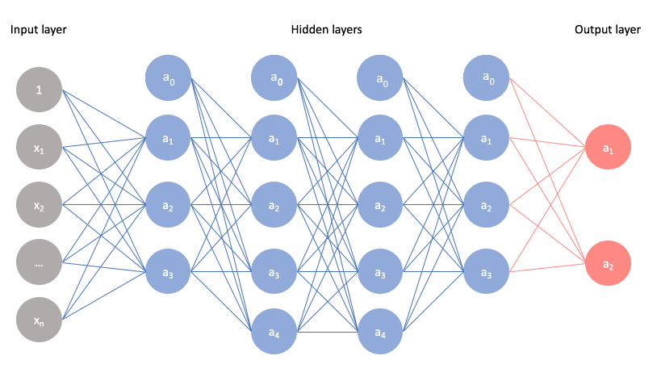
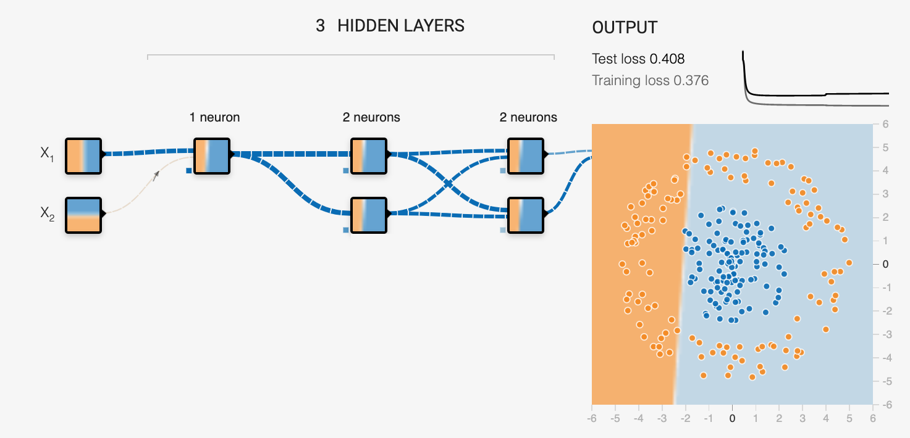
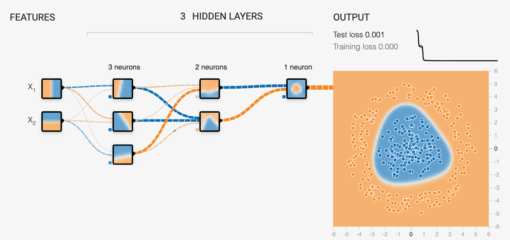

Redes neuronales en análisis espacial
Jesús Escalante Desarrollador Front-End S4N ghouljd @ghouljder
Dato
Dato Espacial
Tipos de Datos Espaciales
De puntos
De área
Geoespaciales
Análisis Espacial
Red Neuronal probabilística (PNN)
Grupos de capas
Clasificación
Clasificación
... juntos!!!
Índices de clasificación
Índice de Moran
¿Preguntas?
Gracias 🙌🏻